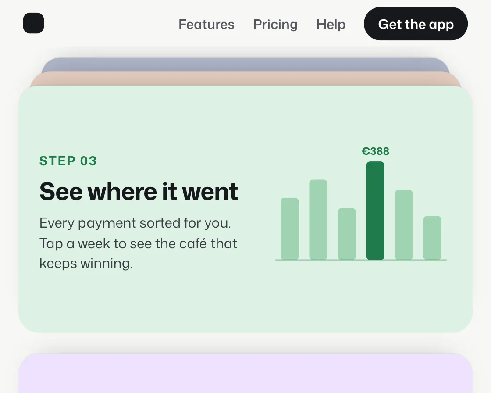

Sticky card stack
Sticky card stack is a DOM effect: sticky cards stack; each steps back as the next arrives. One plain JavaScript file with no dependencies; add it with npx motion-library add sticky-stack.

Open it live, tune it and copy the code
What is Sticky card stack?
Each step card sticks a little lower than the last, and covered cards scale back and dim.
How does Sticky card stack work?
position: sticky does the stacking; each card’s depth comes from how far later cards have travelled, driving a scale from the top edge and a shade.
How do I add Sticky card stack to my website?
- In your project folder, run
npx motion-library add sticky-stack. It writesanimations/sticky-stack.js. Needs Node 18 or newer. - Import it and call it with a container element that has a size:
import fx from './animations/sticky-stack.js'; const stop = fx(document.querySelector('#hero')); - Call
stop()to clean up, for example when a component unmounts.
Every setting below is also a flag, so you can install it already tuned: npx motion-library add sticky-stack --shrink 0.15.
What settings can I tweak?
| Setting | Flag | Default | Range | Step |
|---|---|---|---|---|
| Shrink per card | --shrink | 0.05 | 0 to 0.15 | 0.005 |
| Shade per card | --shade | 0.12 | 0 to 0.3 | 0.01 |
Specifications
- Renderer
- DOM (CSS and the Web Animations API)
- Category
- Scroll
- Dependencies
- None
- File size
- 8.8 KB, unminified
- Interactive
- Yes: it follows scrolling
- Reduced motion
- Respects prefers-reduced-motion
- Licence
- MIT-0: use it anywhere, no credit needed
Source code
// Sticky card stack, on a budgeting app's "how it works" section: each step card sticks a little lower than the last, and as the next card slides up over it, the one underneath scales back and dims, so the steps pile up like a deck.
// position: sticky does the stacking; the only scripted part is the depth of each card, read from how far the cards after it have travelled, which drives a small scale and a shade. Scaling from the top edge keeps a sliver of every earlier card visible, so you always see how many steps are behind you.
const PARAMS = { shrink: 0.05, shade: 0.12 };
export default function (stage) {
const reduce = matchMedia('(prefers-reduced-motion: reduce)').matches;
const AH = 340, MINW = 400, NAV = 40, CH = 214;
const cards = [
['01', 'Connect your accounts', 'Link your current account, savings and card in a minute. Read-only, and you can unlink any time.', '#dfe8ff', '#2f4fbf',
`<div class="ss-rows">${[['Current account', '€2,140.18'], ['Savings', '€6,302.00'], ['Credit card', '−€412.60']].map(([a, b]) => `<div><i></i><span>${a}</span><b>${b}</b><em>✓</em></div>`).join('')}</div>`],
['02', 'Give every euro a job', 'Split the month before it starts: rent, food, fun and the rest, so nothing surprises you on the 28th.', '#ffe4d6', '#c2532b',
`<svg viewBox="0 0 120 120" class="ss-ring"><circle cx="60" cy="60" r="44" fill="none" stroke="#f6cdb8" stroke-width="16"/><circle cx="60" cy="60" r="44" fill="none" stroke="#c2532b" stroke-width="16" stroke-dasharray="116 400" transform="rotate(-90 60 60)"/><circle cx="60" cy="60" r="44" fill="none" stroke="#e8935f" stroke-width="16" stroke-dasharray="50 400" stroke-dashoffset="-118" transform="rotate(-90 60 60)"/><circle cx="60" cy="60" r="44" fill="none" stroke="#f2b48d" stroke-width="16" stroke-dasharray="28 400" stroke-dashoffset="-170" transform="rotate(-90 60 60)"/><text x="60" y="58" text-anchor="middle" font-size="15" font-weight="700" fill="#3a1d10">€2,600</text><text x="60" y="73" text-anchor="middle" font-size="8" fill="#7a4a33">planned for March</text></svg>`],
['03', 'See where it went', 'Every payment sorted for you. Tap a week to see the café that keeps winning.', '#dcf2e3', '#1f7a4a',
`<svg viewBox="0 0 140 110" class="ss-bars">${[48, 62, 40, 76, 54, 34].map((h, i) => `<rect x="${8 + i * 22}" y="${96 - h}" width="14" height="${h}" rx="3" fill="${i === 3 ? '#1f7a4a' : '#9fd3b2'}"/>`).join('')}<path d="M4 96h132" stroke="#1f7a4a" stroke-opacity=".3"/><text x="${8 + 3 * 22 + 7}" y="${96 - 76 - 5}" text-anchor="middle" font-size="8" font-weight="700" fill="#1f7a4a">€388</text></svg>`],
['04', 'Save without thinking', 'Round every payment up to the next euro and the change goes to savings. It adds up faster than you think.', '#efe2ff', '#6b3fb8',
`<div class="ss-save"><div><span>Coffee</span><b>€3.40</b></div><div><span>Rounded up</span><b>+€0.60</b></div><div class="ss-jar"><span>Holiday fund</span><i><u></u></i><b>€418 of €600</b></div></div>`],
];
const root = document.createElement('div');
root.className = 'ss-root';
root.innerHTML = `<style>
.ss-root { position: absolute; inset: 0; overflow: hidden; background: #f7f7f5; color: #17181c; font-family: "Mona Sans", system-ui, -apple-system, sans-serif; }
.ss-art { position: absolute; left: 0; top: 0; height: ${AH}px; transform-origin: 0 0; }
.ss-scroll { position: absolute; inset: 0; overflow-y: auto; overflow-x: hidden; scrollbar-width: none; }
.ss-scroll::-webkit-scrollbar { display: none; }
.ss-nav { position: sticky; top: 0; z-index: 9; height: ${NAV}px; display: flex; align-items: center; gap: 16px; padding: 0 20px; background: #f7f7f5; font-size: 11.5px; font-weight: 560; color: #55575f; }
.ss-nav i { width: 18px; height: 18px; border-radius: 6px; background: #17181c; margin-right: auto; }
.ss-nav b { color: #fff; background: #17181c; padding: 6px 12px; border-radius: 999px; font-weight: 650; }
.ss-intro { padding: 18px 20px 14px; }
.ss-intro h1 { margin: 0; font-size: 30px; line-height: 1.04; font-weight: 720; letter-spacing: -0.03em; }
.ss-intro p { margin: 6px 0 0; font-size: 12.5px; color: #55575f; }
.ss-list { padding: 0 16px 120px; }
.ss-card { position: sticky; height: ${CH}px; margin-bottom: 18px; border-radius: 18px; display: grid; grid-template-columns: 1fr 44%; gap: 14px; align-items: center; padding: 18px; box-sizing: border-box; transform-origin: 50% 0; will-change: transform; box-shadow: 0 -1px 0 rgba(0,0,0,.04), 0 -10px 24px -18px rgba(0,0,0,.35); overflow: hidden; }
.ss-card .ss-shade { position: absolute; inset: 0; background: #17181c; opacity: 0; pointer-events: none; }
.ss-card small { font-size: 11px; font-weight: 700; letter-spacing: .08em; }
.ss-card h2 { margin: 6px 0 8px; font-size: 21px; line-height: 1.08; font-weight: 700; letter-spacing: -0.02em; }
.ss-card p { margin: 0; font-size: 12px; line-height: 1.45; color: #3c3e45; }
.ss-rows { display: grid; gap: 6px; }
.ss-rows div { display: grid; grid-template-columns: 10px 1fr auto 14px; gap: 7px; align-items: center; padding: 8px 9px; border-radius: 10px; background: #fff; font-size: 10.5px; }
.ss-rows i { width: 8px; height: 8px; border-radius: 50%; background: #2f4fbf; }
.ss-rows b { font-weight: 650; font-variant-numeric: tabular-nums; }
.ss-rows em { font-style: normal; color: #2f4fbf; font-weight: 700; }
.ss-ring, .ss-bars { width: 100%; height: 150px; font-family: "Mona Sans", system-ui, sans-serif; }
.ss-save { display: grid; gap: 6px; font-size: 10.5px; }
.ss-save > div { display: flex; justify-content: space-between; padding: 8px 10px; border-radius: 10px; background: #fff; }
.ss-save b { font-weight: 680; color: #6b3fb8; }
.ss-jar { flex-direction: column; gap: 6px; }
.ss-jar i { display: block; height: 8px; border-radius: 8px; background: #e4d6fb; overflow: hidden; }
.ss-jar u { display: block; height: 100%; width: 70%; background: #6b3fb8; border-radius: 8px; }
</style>
<div class="ss-art"><div class="ss-scroll">
<div class="ss-nav"><i></i><span>Features</span><span>Pricing</span><span>Help</span><b>Get the app</b></div>
<div class="ss-intro"><h1>Money, sorted in four steps.</h1><p>No spreadsheets. Most people are set up before their coffee goes cold.</p></div>
<div class="ss-list">${cards.map(([n, h, p, bg, ink, ui], i) => `<div class="ss-card" style="background:${bg};top:${NAV + 10 + i * 12}px;z-index:${i + 1}"><div><small style="color:${ink}">STEP ${n}</small><h2>${h}</h2><p>${p}</p></div><div>${ui}</div><div class="ss-shade"></div></div>`).join('')}</div>
</div></div>`;
stage.append(root);
const box = root.querySelector('.ss-art'), sc = root.querySelector('.ss-scroll');
const els = [...root.querySelectorAll('.ss-card')], shades = els.map(e => e.querySelector('.ss-shade'));
let pins = [];
const fit = () => {
const W = stage.clientWidth, H = stage.clientHeight, s = Math.min(H / AH, W / MINW) || 1;
box.style.width = W / s + 'px'; box.style.top = (H - AH * s) / 2 + 'px'; box.style.transform = `scale(${s})`;
// the scroll position at which each card reaches its sticky line (offsets are measured relative to the scroller's content)
pins = els.map((e, i) => e.offsetTop - (NAV + 10 + i * 12));
};
const ro = new ResizeObserver(fit); ro.observe(stage); fit();
const end = () => sc.scrollHeight - sc.clientHeight;
const stops = [[() => 0, 0, 1000], ...els.map((_, i) => [() => pins[i], 1000, i === els.length - 1 ? 1300 : 750]), [() => 0, 1700, 400]];
const ease = t => t < 0.5 ? 4 * t * t * t : 1 - Math.pow(-2 * t + 2, 3) / 2;
let seg = null, si = 0, userUntil = 0, raf;
const take = () => { userUntil = performance.now() + 3000; seg = null; };
['wheel', 'touchstart', 'pointerdown'].forEach(e => sc.addEventListener(e, take, { passive: true }));
function drive(now) {
if (now < userUntil) return;
if (!seg) { const [at, dur, hold] = stops[si++ % stops.length]; seg = { from: sc.scrollTop, to: Math.min(end(), at()), t0: now, dur, hold }; }
const k = seg.dur ? Math.min(1, (now - seg.t0) / seg.dur) : 1;
sc.scrollTop = seg.from + (seg.to - seg.from) * ease(k);
if (now - seg.t0 >= seg.dur + seg.hold) seg = null;
}
function frame(now) {
drive(now);
const y = sc.scrollTop;
els.forEach((e, i) => {
// depth = how many later cards have slid over this one, counting the one on its way as a fraction
let d = 0;
for (let j = i + 1; j < els.length; j++) d += Math.min(1, Math.max(0, (y - (pins[j] - CH)) / CH));
if (!reduce) e.style.transform = `scale(${(1 - PARAMS.shrink * d).toFixed(4)})`;
shades[i].style.opacity = Math.min(0.5, PARAMS.shade * d).toFixed(3);
});
raf = requestAnimationFrame(frame);
}
raf = requestAnimationFrame(frame);
return () => { cancelAnimationFrame(raf); ro.disconnect(); root.remove(); };
}